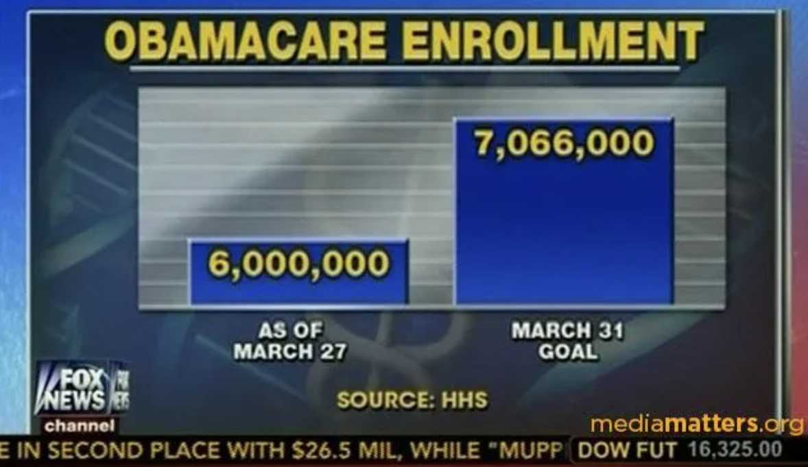

Teguh Ariyanto | LinkedIn | GitHub
Here is GDP per capita for several countries.
Below is another GDP per Capita presented in bar chart:
Below is a line chart showing the trend of real GDP of Indonesia:
Below is a line chart showing the amount of renewable energy in Indonesia over the years:
The following two charts illustrate the decline in UK productivity, highlighting key trends and shifts over recent years.
Below is a line chart showing the stagnation of UK Productivity:
One probable reason behind the stagnation in UK productivity is stagnant business investment, as explained in the chart below:
In this section, I selected an image from a news article that showed a bar chart of Obamacare enrollment, as seen below:
The image above contains several elements that could potentially mislead the audience, including:
- The X-axis does not start from zero, which exaggerates the gap between the current enrollment as of March 27 and the target for March 31.
- The target number is also misleading, as it was revised from 7 million to 6 million a year prior, a figure that has already been reached according to the data. While this may not directly relate to the chart, it underscores the importance of accurate data and thoughtful data visualization.
Below is the revised version of the chart I created without adjusting the target from 7 million to 6 million enrollment:
Below is line chart on Foreign Direct Investment (FDI) in Provinces in Java Island, Indonesia from 2010 to 2023:
I chose data from the Indonesian Ministry of Investment website because it provides a clearer distribution of FDI across provinces.
Below is the chart illustrates the trends of CPI for various goods and services (in pounds), average weekly wage (in pounds), and labour productivity index, ranging from 2002 to 2023. Notably, the lines representing average weekly wage and labour productivity index are dashed to differentiate them from the CPI trends.
Choropleth map of FDI inflow across Indonesia shows high concentration in Java, with post-2020 growth in regions like Maluku Utara and Sulawesi Tengah.